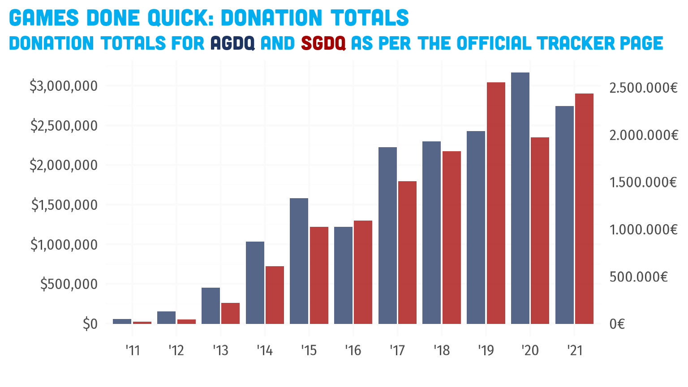

all-events.Rmd
library(gdqdonations)
library(dplyr)
#>
#> Attaching package: 'dplyr'
#> The following objects are masked from 'package:stats':
#>
#> filter, lag
#> The following objects are masked from 'package:base':
#>
#> intersect, setdiff, setequal, union
library(ggplot2)
donations <- augment_donations(gdqdonations::gdq_donations)
runs <- gdqdonations::gdq_runs
gdq_donation_totals <-
donations %>%
group_by(event) %>%
summarize(
total = sum(amount),
avg = mean(amount),
gdq = unique(gdq),
year = unique(year)
) %>%
arrange(as.numeric(year)) %>%
mutate(cumtot = cumsum(total))
gdq_donation_totals %>%
ggplot(aes(x = year, y = total, fill = gdq)) +
geom_col(position = position_dodge2(preserve = "single"), alpha = .75) +
scale_x_year_discrete() +
scale_y_currency(
breaks = seq(0, 10e6, 5e5),
minor_breaks = seq(0, 10e6, 2.5e5)
) +
scale_colorfill_gdq() +
labs(
title = "Games Done Quick: Donation Totals",
subtitle = "Donation totals as per the official tracker page"
) +
theme_gdq()
donations %>%
filter(time_rel >= 0 & time_rel <= 1) %>%
group_by(event) %>%
mutate(amount_total = cumsum(amount)) %>%
ungroup() %>%
mutate(
year_g = cut(as.numeric(year), breaks = 4),
highlight = event == event_index$event[event_index$start == max(event_index$start)]
) %>%
ggplot(aes(x = time_rel, y = amount_total, color = highlight, group = event)) +
geom_step() +
scale_y_currency() +
scale_color_manual(
values = c("TRUE" = "red", "FALSE" = "gray"),
labels = c("TRUE" = "Current Event", "FALSE" = "Previous events"),
name = ""
) +
labs(
title = "Current event donation progression",
subtitle = "Compared to previous events, with tim relative to start/end of event",
y = "Cumulative donation total",
x = "Event Progression"
) +
theme_gdq()